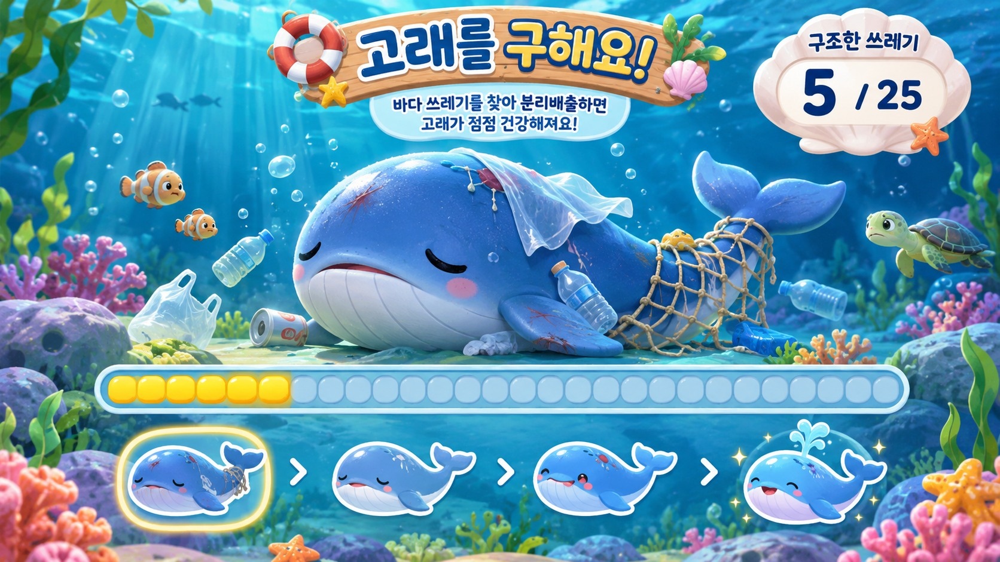

연결 준비 중
고래를 구해 주세요!

교실 속 쓰레기 그림을 찾고
바르게 분리배출하면 고래가 힘을 얻어요!
그림카드 선택
교사용 테스트 기능 · 카메라 없이도 정답 판정 가능
어디에 버릴까요?
바다 지킴이 OX 미션!
⭐
정답이에요!
고래가 조금 더 건강해졌어요!
🐳🎉
고래 구조 성공!
우리 반 친구들이 힘을 모아 고래를 구했어요!
전자칠판에서 건강해진 고래를 만나 보세요.
선생님 안내
기존 재활용 마커 12장과 같은 순서의 targets.mind 파일을 사용합니다. 일반 그림 10장 + OX 특별카드 2장입니다. 같은 그림도 다음 차례에 다시 사용할 수 있습니다. 목표 변경과 초기화는 전자칠판의 교사 설정에서 진행합니다.
어린이 개인정보를 수집하지 않는 공동 구조 활동